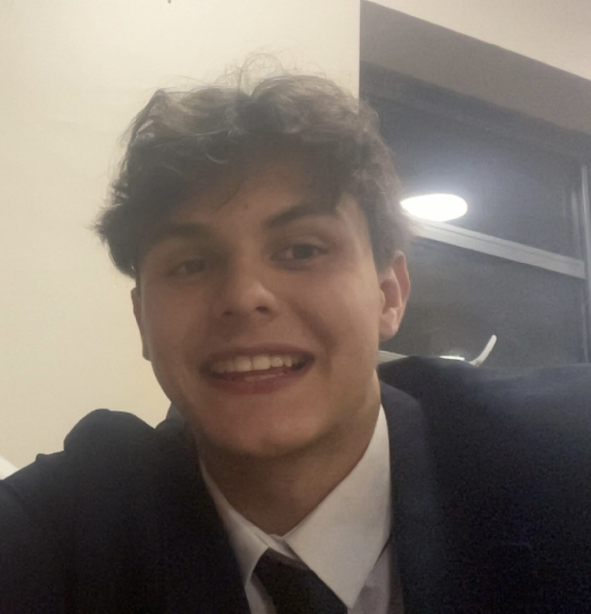
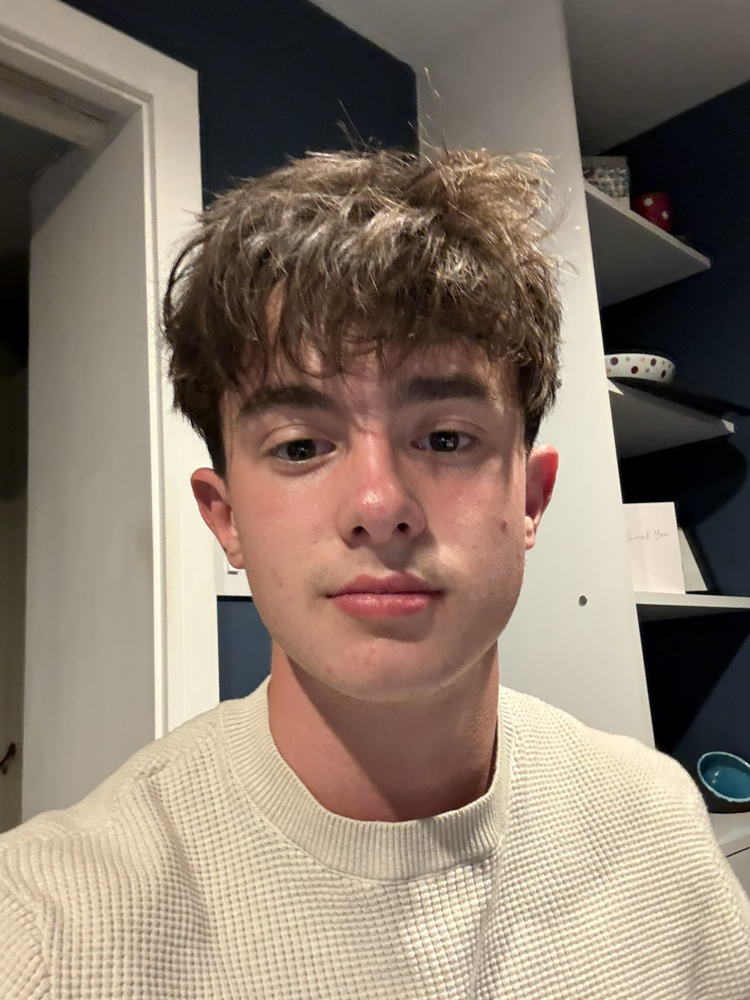
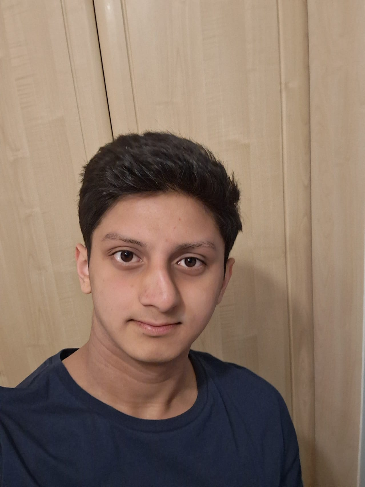

About us
We're five Year 12s at Simon Langton
We entered the Cancer Research UK Convergence Science Centre Prize as part of Imperial College London's Science in Medicine School Teams Prize 2026.
The team
Who worked on what

Charlie
Poster design
Worked on the poster layout and the diagram, and put together the QR code page.

Jude
Access research
Researched mobile screening units and how to actually reach underserved areas.

Omkar
Project lead, evidence base
Started the project and found a lot of the main research, like the MASAI trial and the bias studies.
Theo
Argument, accessibility
Came up with our main argument about fairness vs. accuracy, and checked the poster for accessibility.
Tom
Evaluation, quality check
Looked into how patients feel about AI screening, and helped plan how we'd test our idea.
How it went
Timeline
18 May 2026
Started
Picked Cancer Research UK as our focus and started brainstorming.
19 May 2026
Picked a topic
Settled on diversifying AI in cancer scanning after comparing a few ideas.
29 May – 9 June 2026
Main research
Found most of our core evidence — the MASAI trial, the bias studies, the cost data.
10 – 16 June 2026
Filling gaps
Added research on access barriers, mobile units and patient acceptability.
18 – 29 June 2026
Building the poster
Drafted the layout, made the diagram, checked accessibility, finalised references.
30 June 2026
Final check
Read through the poster together one last time before submitting.